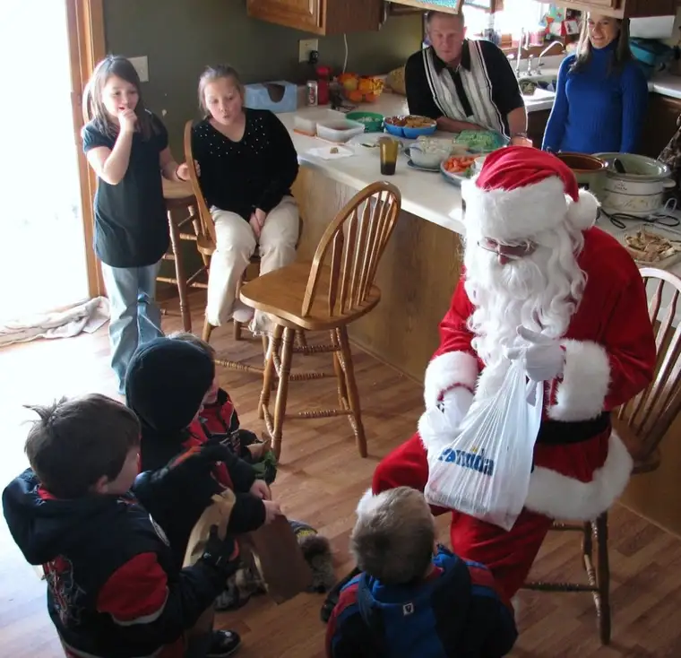

I will look back on this Christmas season as one that was filled with an intense array of joys and sorrows. The joys have included a truly white, sparkling Christmas; the warmth of good friends; a simpler approach to the season which has brought a deeply resonating peace; and the delighted looks on the faces of my children as they take in the wonder of it all. But loss, too, has seemed a prominent force in my world of late. Some losses have been more closely connected to my immediate family. All of them have profoundly affected me. Most recently, I have taken part in the grieving of a young girl my daughter’s age, and now, of a mother my age who was conflicted to the end over the thought of leaving her two young sons.
{kind=link}
I just received a heartening comment from a blogger friend, Buffalo Gal, who acknowledged my grieving despite lack of a real-life encounter. A few years back, I read a book titled, “Grieving the Loss of a Friend,” which said that anytime someone touches our lives, no matter how long the duration of our crossing, the resulting grief is real. And as Buffalo Gal suggested, there is something about the writing life that exposes one’s soul to the world. Emilie considered herself an introvert, yet in sharing her joys and trials of motherhood, and ultimately, her confliction in leaving this world and her boys, she allowed so many into her mind, heart and soul. There was so much I didn’t know about Emilie, but what I did know through her sharing has enriched my life. Both the connection I feel to her, as well as the grieving, is real and will continue to affect how I approach my life from here on out.
So as we headed out on a beautiful, sparkling afternoon on Wednesday, minutes after I learned of Emilie’s passing, my thoughts were all over the place. We took two vehicles — boys with hubby, girls with me. I would catch myself alternating between listening to excited “girl chatter,” music from “The Nutcracker,” and thinking of Emilie. When we arrived at our in-laws, the delicious smell of cinnamon and the warmth of hugs and a Christmasy-decorated home welcomed us. Hamburger soup simmered in the Crockpot and the tree shined. For a while, I was able to let go of grief. But during the quiet spaces at Mass the next morning, I was back thinking of Emilie…and her little boys, who surely would be wanting a hug from their mama. Though it’s hard, it’s possible to make some logical sense of death as the transition from one life to another. But when we reach the heart of it, such as the thought of two little boys yearning for a mommy hug, we can be brought to our knees.
Later on Christmas Day, Santa paid a visit and the kids gathered around him to receive their little treats, then the boys headed outside to sled on the snow-packed lake. We girls gathered around the kitchen as we tend to do, and ultimately, thoughts of Grandpa John, who left us in October, emerged, and once again the bittersweet thoughts of life and death collided.

With so many deaths the latter part of this year, I am, at this moment anyway, questioning not so much why those particular loved ones are gone, but why I am still here. There must be a reason, and so I must continue onward to learn what it is.
{kind=link}
The following poem was left in the comments section of Emilie’s blog and is a poignant, beautiful expression of loss. I hope it will bring some comfort to you in your own personal losses as it did me in mine.
Gone From My Sight
by Henry Van Dyke
I am standing upon the seashore. A ship, at my side,spreads her white sails to the moving breeze and startsfor the blue ocean. She is an object of beauty and strength.I stand and watch her until, at length, she hangs like a speckof white cloud just where the sea and sky come to mingle with each other.
Then, someone at my side says, “There, she is gone”
Gone where?
Gone from my sight. That is all. She is just as large in mast,hull and spar as she was when she left my side. And, she is just as able to bear her load of living freight to her destined port.
Her diminished size is in me — not in her.And, just at the moment when someone says, “There, she is gone,”there are other eyes watching her coming, and other voicesready to take up the glad shout, “Here she comes!”
And that is dying…
Death comes in its own time, in its own way. Death is as unique as the individual experiencing it.